Software Requirements Specification
For In-form-atiX
Version 2.0 approved Prepared by Nita Alexandru 18.06.2023
Table of Contents
- Revision History
- Introduction
- 1.1 Purpose
- 1.2 Intended Audience and Reading Suggestions
- 1.3 Product Scope
- 1.4 References
- Overall Description
- External Interface Requirements
- System Features
- Other Nonfunctional Requirements
Revision History
| Name | Date | Reason For Changes | Version |
|---|---|---|---|
| Nita Alexandru | 18.04.2023 | Update | 2.0 |
1. Introduction
1.1 Purpose
The purpose of the product is to help highschool students in solving algorithmic problems for a future career in the IT industry and help teachers in managing their class by setting homeworks.
1.2 Intended Audience and Reading Suggestions
This document is intended for developers, administrators and users. The target audience for this site are students aspiring to improve their programming skills and teachers seeking a more interactive approach to collaborate with their class.
1.3 Product Scope
The scope of the product is to improve the education system and the teacher-student relation by providing a user-friendly and enjoyable environment for students to develop their programming skills.
1.4 References
Overall Description
2.1 Product Perspective
This project is inspired by pbinfo.ro with the aim of simplifying and enhancing the learning experience of programming for students. This platform want to create an interactive environment that not only makes the learning process easier but also provides teachers with effective tools for managing their students.
2.2 Product Functions
The platform allows the creation of student or teacher accounts.
→Teachers can create classes of students, create homeworks for them, mark their solutions and offer new problems for the platform(which will be reviewed by admins).
→Students can solve different problems on the platform and assignments provided by teachers, give a rating to the problems and leave comments.
They can see different statistics like total submissions and number of correct submissions for a problem.
→Admins can post different news on the index page, can delete accounts, approve problems and see different statistics like number of users, problems, submissions etc.
Each user has a profile page where they can modify different user information, for example: name, password, email.
2.3 User Classes and Characteristics
The product consists of 3 user classes: administrator, teacher and
student.
The administrator approves problems proposed by teachers and
manages the site (like rude comments on a problem).
The teacher can manage their classes of students and can set homeworks for them,
based on the problems on the site.
The student can solve problems and homeworks on the site, rate and comment on problems.
2.4 Operating Environment
The operating system used for this product is a Debian GNU/Linux server running on DigitalOcean with a PHP backend and PostGres database server and the webserver ngnix.
2.5 Design and Implementation Constraints
- Server: Debian GNU/Linux
- WebServer: nginx
- Database: Postgres
- Backend: PHP
- Frontend: HTML, CSS, JavaScript
2.6 User Documentation
In case users encounter any difficulties while using this site, they can access the help button to consult this document which contains screenshots and information about the platform.
2.7 Assumptions and Dependencies
The user knows how to use a web brower and solve a problem :D.
External Interface Requirements
3.1 User Interfaces
The user interface is composed of a web application. Some screenshots:
Register:
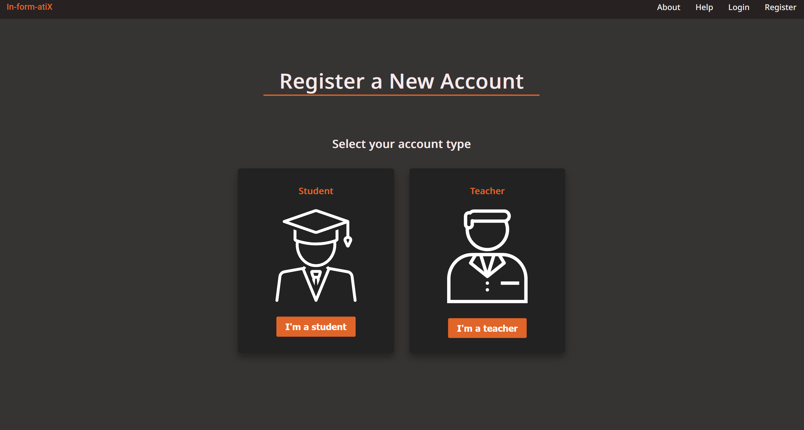
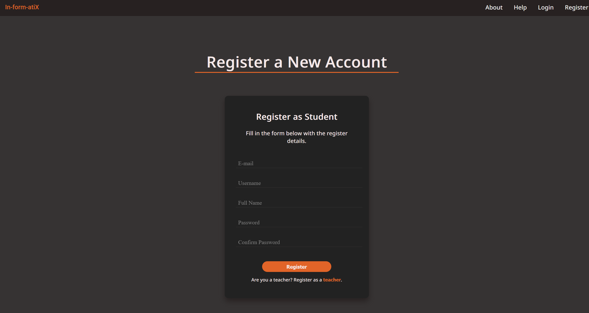
Login:
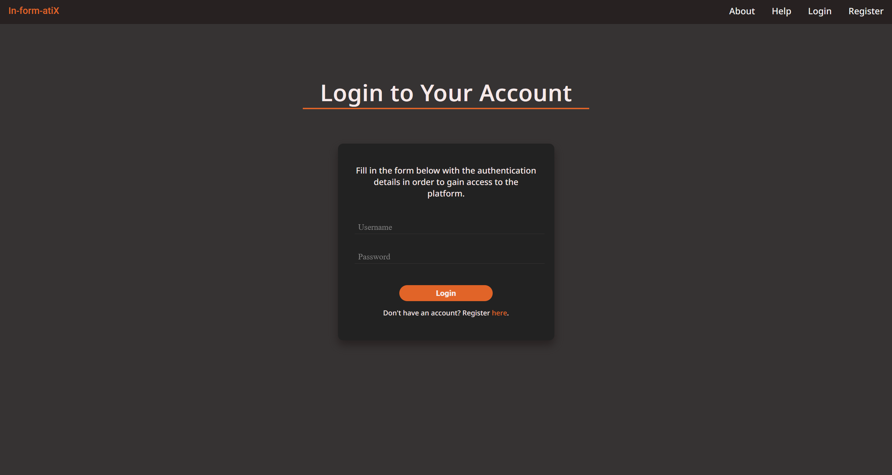
Student profile: at /profile.html
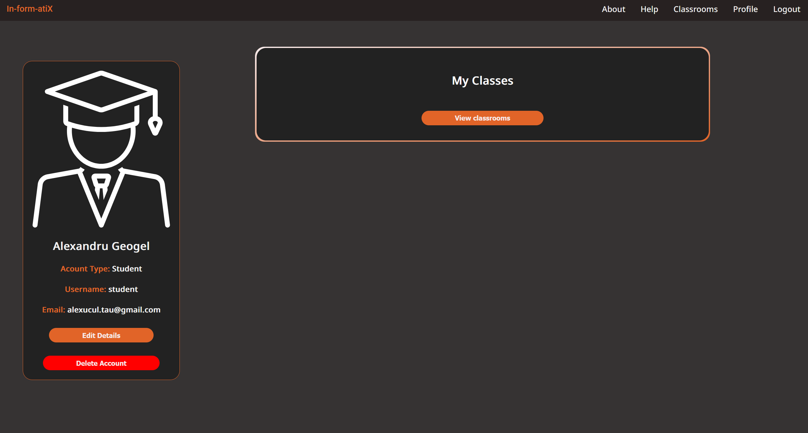
Teacher profile: at /profile.html
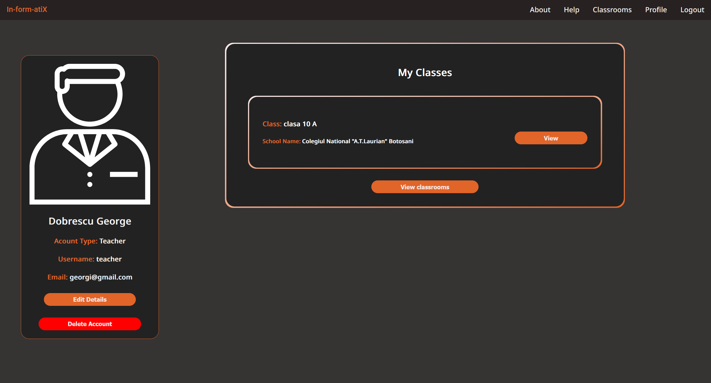
Admin profile: at /profile.html
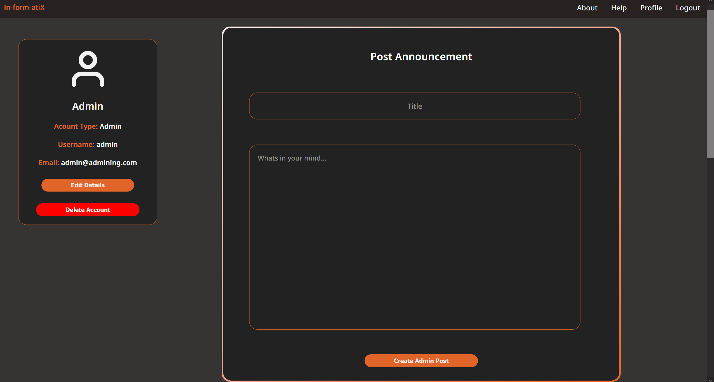
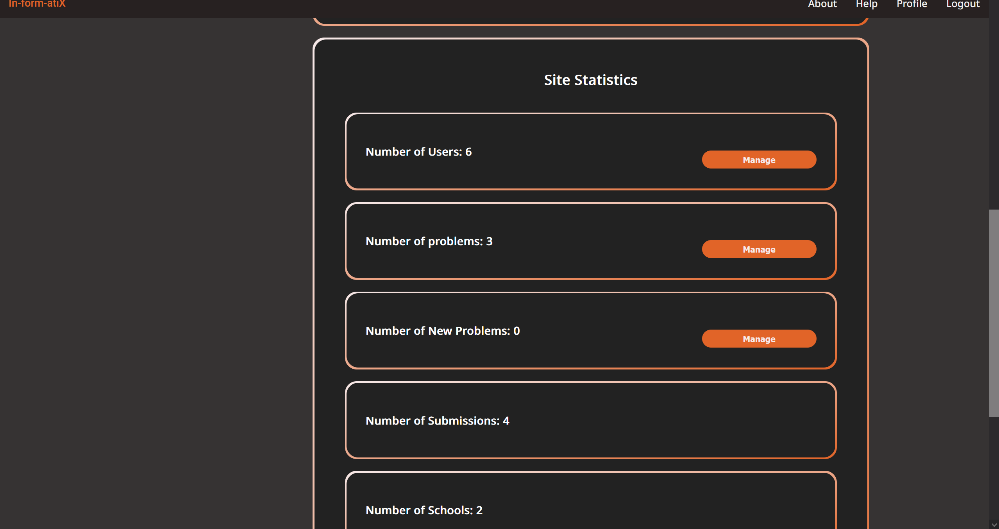
Problem: at /problem.html#{id} (ex: /problem.html#2)
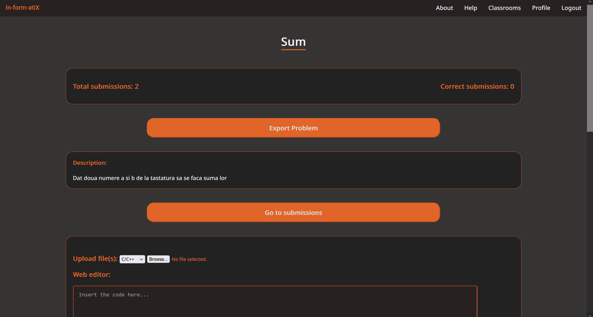
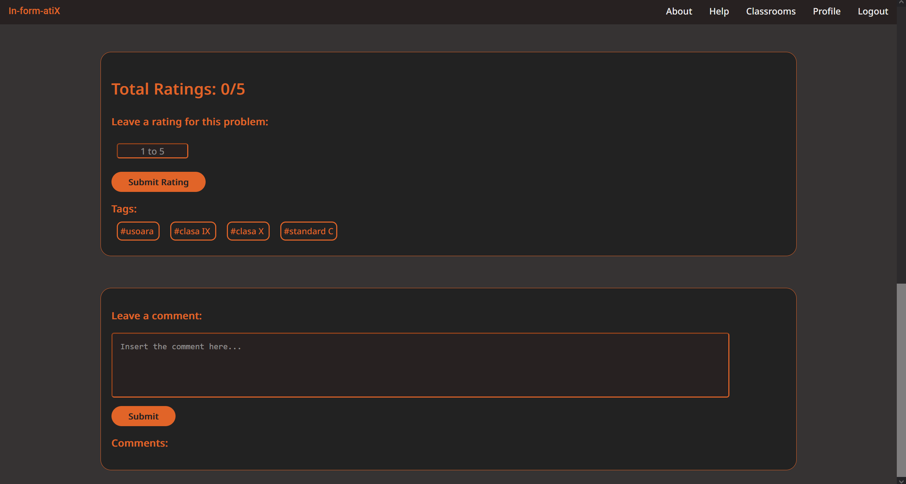
Solutions: at /solution.html#{id} (ex: /solution.html#2). You need to submit a solution to see it there
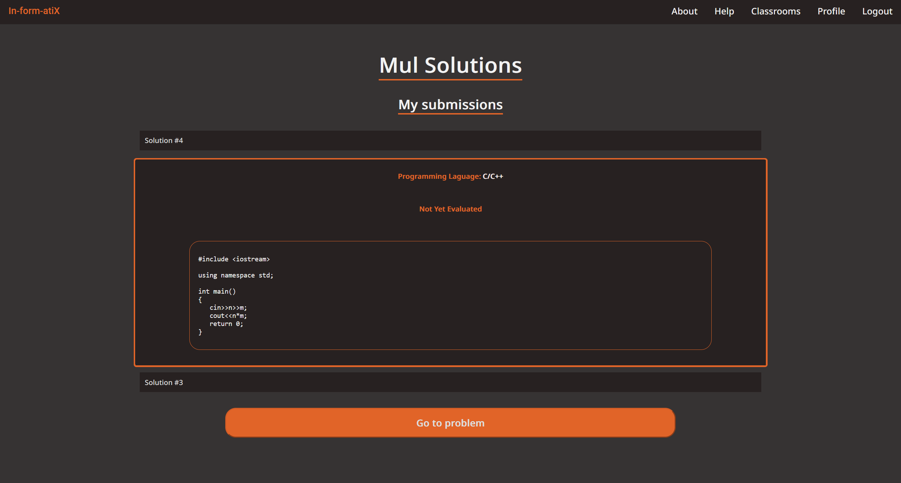
Propose problem: at /proposeproblem.html
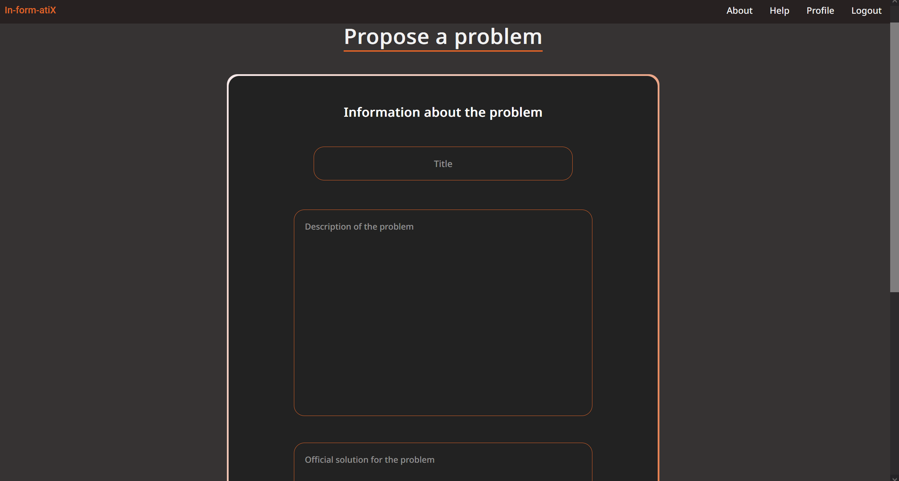
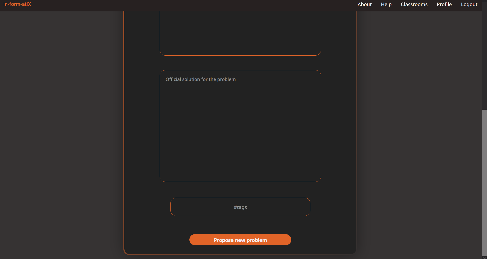
Classrooms: at /classrooms.html
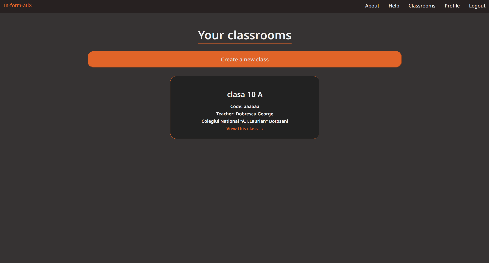
Classroom details: at /classroom.html#{id} (ex: classroom.html#2)
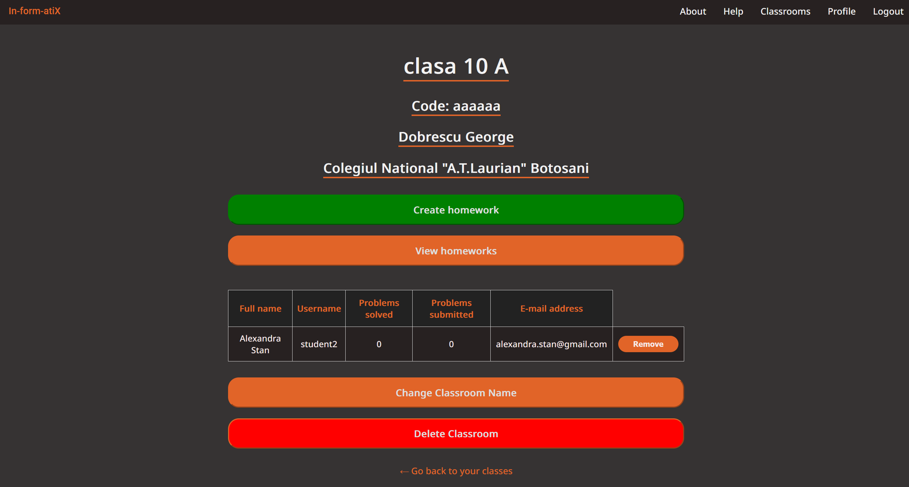
Homework: at /viewhomeworks.html#{id} (ex:/viewhomeworks.html#2)
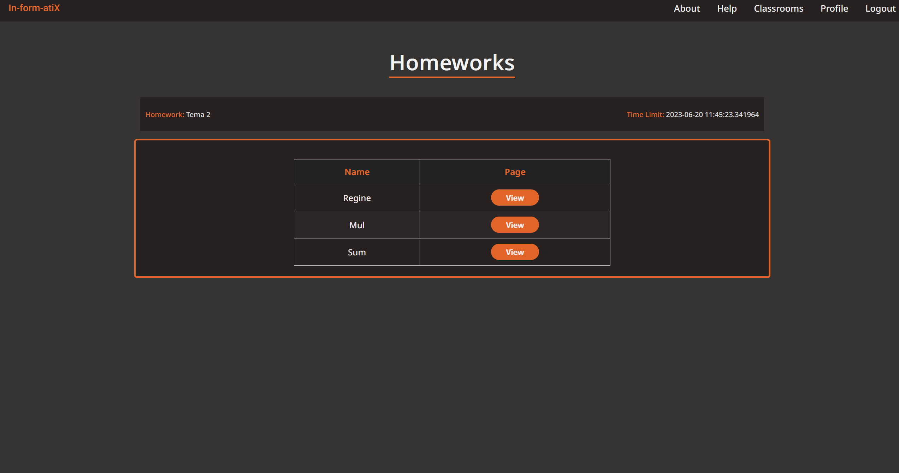
Homework submissions: at /viewhomeworksubmissions.html#{id} (ex: /viewhomeworksubmissions.html#2). You need to be logged as a teacher
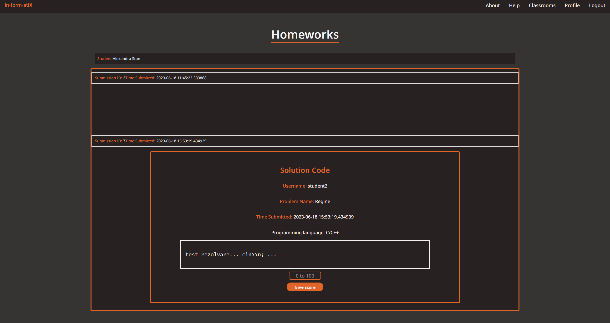
3.2 Hardware Interfaces
The hardware interface in this project is flexible, not being dependend on anything.
3.3 Software Interfaces
The software will use the Model, View, Controller mode of operation being independent and open to modifications. The operating system is Debian GNU/Linux, the controller will use the database Postgres for managing persistent data. The persistend data consists of:
- algorithmic problems, rating, comments
- username, password
The solution of the problem is stored on the local storage with the filename as the id of the problem in which the controller will use to compare the solution submitted by a student.
3.4 Communications Interfaces
The communication between the frontend and backend takes place through the API provided by the backend docker container.
System Features
4.1 Frontend
4.1.1 Description and Priority
Create the interface that the user will see and use.
Priority: high
4.1.2 Stimulus/Response Sequences
The aspect of the interface and the usability of it should atttract the user to engage with the product.
4.1.3 Functional Requirements
- Create all the user pages.
4.2 Backend
4.2.1 Description and Priority
Create the backend of the site which will implement every functionality of the platform and display information for the user by creating generated pages for the user making the site dynamic.
Priority: high
4.2.2 Stimulus/Response Sequences
- User registers with name, username, fullname, password.
- User login using username and password.
- Teacher submission of problems and checking them with an administrator.
- Teachers can create classrooms and manage the students in the classrooms.
- Teachers can grade soultions (and solutions in homeworks).
- Teachers can view/create/delete homeworks for their classes.
- Student submission of solution to problems(and problems in homeworks).
- Students can see his previous submissions and correct submissions.
- Students can rate and comment on a problem.
- Students can see their homeworks.
- Each user has a profile page with different information based on the user type(classes for teachers/students, statistics(number of users,problems etc) for admins).
4.2.3 Functional Requirements
- Should be open for extension.
- Secure.
- Fast.
Other Nonfunctional Requirements
5.1 Performance Requirements
Trying to limit the DOM manipulation just for the begginng of page loading.
5.2 Safety Requirements
Security and GDPR compliance.
5.3 Security Requirements
Always use HTTPS with certbot.
5.4 Software Quality Attributes
Adaptability, availability, maintainability.